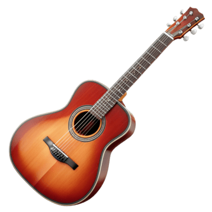

Universo Musical
Una guitarra eléctrica es un instrumento musical que produce sonido al convertir la vibración de sus cuerdas en señales eléctricas, que luego son amplificadas por un amplificador. A diferencia de las guitarras acústicas, las guitarras eléctricas no dependen de la resonancia de su caja para producir sonido; su sonido se genera a través de pastillas (o pickups) que captan la vibración de las cuerdas y la transforman en señal eléctrica.
Una guitarra acústica es un instrumento musical de cuerda pulsada que produce sonido a través de la vibración de las cuerdas, amplificado por la caja de resonancia. A diferencia de las guitarras eléctricas, las acústicas no requieren amplificación externa, aunque algunas pueden tener sistemas de pastillas para amplificación adicional. Son conocidas por su sonido brillante y resonante, ideal para diversos géneros musicales como el folk, pop, y rock.
Las guitarras Gibson conocidas mundialmente por su calidad, sonido distintivo y artesanía, siendo utilizadas por músicos legendarios de diversos géneros. La empresa, fundada por Orville Gibson en 1902, ha tenido una larga historia de innovación y producción de instrumentos icónicos, como la Les Paul y la SG.